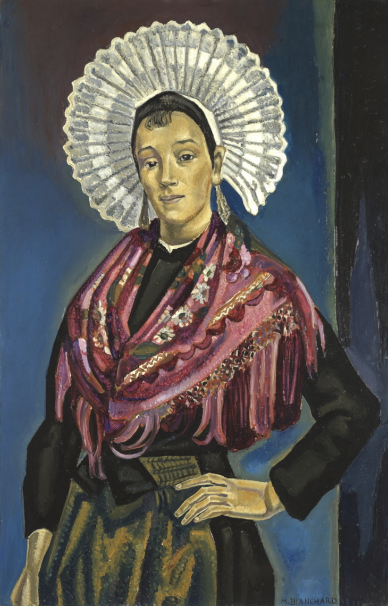
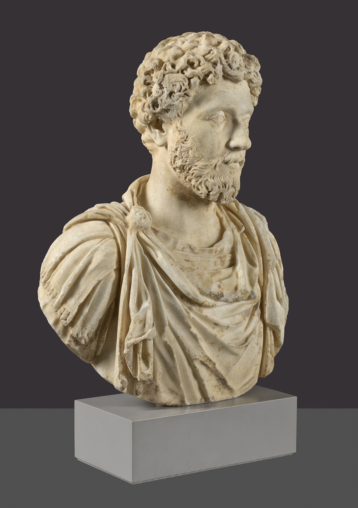

A Museo Nacional del Prado olyan jelentős és jól ismert múzeum, hogy könnyű azt gondolni róla, hogy mindig is ugyanilyen volt. Az elmúlt 25 évben azonban a múzeum gyűjteménye közel ezer új festménnyel bővült, köztük Fra Angelico, Velázquez és Goya remekműveivel is.
Ebben az időszakban a Prado számos területen fejlődött. Nemcsak művészeti és pénzügyi szempontból bővült, hanem társadalmi szerepe és a közönséghez való kapcsolata is jelentősen erősödött. Ebben fontos szerepet játszott a 2003-ban elfogadott saját törvénye, amelyet a spanyol parlament valamennyi képviselőcsoportja támogatott.
A kiállítást a Fundación Amigos del Museo del Prado támogatja, a Madridi Autonóm Közösség közreműködésével. A tárlat szeptember 27-ig látogatható a Jerónimos épület C és D termeiben.
A Prado. 21. század című kiállítás a múzeum közelmúltjának legfontosabb eseményeit és fejlődési szakaszait mutatja be. Végigkövethetjük, hogyan változott a Prado mindennapi működése, tudományos munkája és kulturális szerepe, valamint hogyan vált egyre fontosabb szereplővé a nemzetközi művészeti életben.
Ezek a művek lehetővé teszik annak vizsgálatát, hogy a trecento kori itáliai művészet modelljeit miként sajátították el és formálták át a spanyol művészek.
6/9/2026 - 9/27/2026

